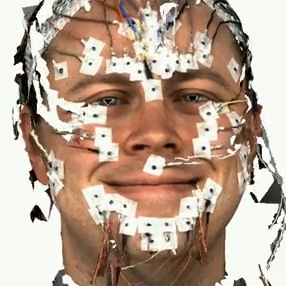
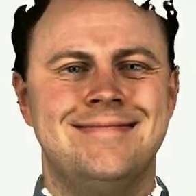
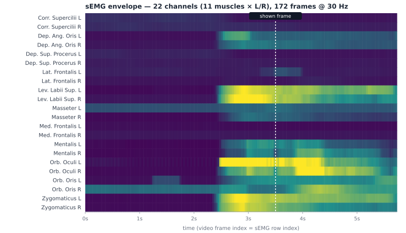
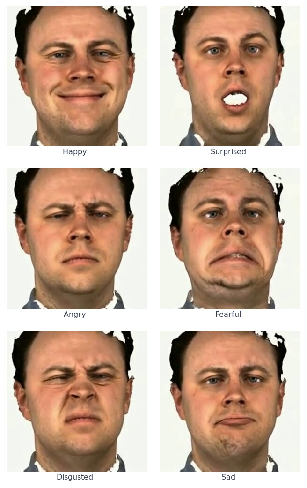
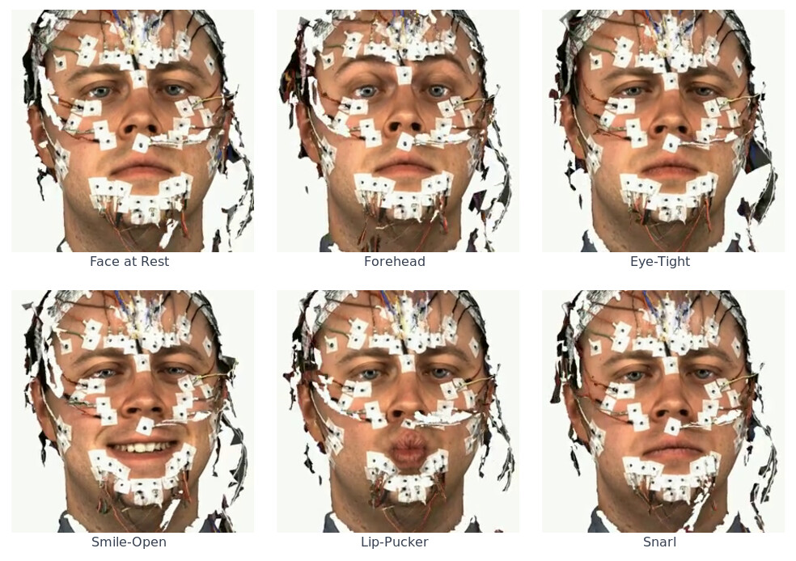

One participant performed standardized facial movements and emotional expressions while surface electromyography and a frontal camera recorded together. Every clip is cut to one task, and the sEMG is resampled to the video frame rate, so signal and image line up by row index.
One person sat in front of a camera and did two kinds of things, twice each — once with sEMG electrodes on the face, once without. The electrode array measures muscle activity but corrupts the face for any image-based method, so the pipeline does three jobs on top of the raw recording:
11 facial muscles × 2 sides at 4096 Hz, and a 286×286 / 30 fps camera, running on independent clocks.
Consensus cross-correlation of sEMG envelopes vs. video blendshapes finds the lag; clips are cut so sEMG row i = video frame i.
MC-CycleGAN synthesizes electrode-free video; seven monocular 3D face reconstructors are fitted to it.

With sEMG electrodes — raw frontal video
Electrodes removed — MC-CycleGANThere was no hardware trigger LED, so alignment is statistical. After the cut, the sEMG envelope (22 channels, 11 muscles × L/R) shares one time axis with the video — the dashed marker in the heatmap below is the exact frame shown beside it.
99_2S_emotion_12_happy

22-channel sEMG envelope · the marker = that frameTwo blocks, each recorded once with electrodes (S) and once without (N).
The last letter of the session label tells you which.


| Session | Clips | with sEMG | emotion | schaede |
|---|---|---|---|---|
99_1N | 13 | 0 | 1 | 12 |
99_1S | 12 | 12 | 1 | 11 |
99_2N | 36 | 0 | 24 | 12 |
99_2S | 34 | 34 | 23 | 11 |
Iterate over MMM.csv — it is the authoritative inventory. The directory tree
also holds files no row references.
| Directory | Files | Contents |
|---|---|---|
emg/ | 46 | Per-clip sEMG CSV, one row per video frame, 22 channels |
video/ | 95 | Frontal video, cut to the synced window |
video_no-cut/ | 96 | Same clips before the sync cut (lead-in/out intact) |
video_noelec/ | 46 | Electrode-removed version of video/ (MC-CycleGAN) |
video_noelec_params/ | 322 | 3DMM params fitted to video_noelec/, one folder per method |
MMM.csv | — | Authoritative clip index |
MMM_3DMM.csv | — | Index restricted to the 46 clips with 3DMM params |
Per-frame parameters for all 46 clean clips; each file has one row per video frame, aligned to video frame i and sEMG row i.
Download the archive, unzip it, and the dataset lives under MMM/. By downloading you agree to the license terms below (CC BY-NC 4.0).
# unzip if needed unzip MMM.zip # -> MMM/ # in Python # read pid as a string — it is zero-padded and pandas silently converts it import pandas as pd df = pd.read_csv("MMM/MMM.csv", dtype={"pid": str}) paired = df[df.emg.notna()] # 46 clips: EMG + video, frame-aligned clean = df[df.type == "normal"] # 49 electrode-free reference clips uncut = df["video_no-cut"] # untrimmed variants (EMG does not apply) # load one clip's sEMG — row i == video frame i emg = pd.read_csv("MMM/" + paired.iloc[0]["emg"]) # 22 columns, 30 Hz
Use requires citing the three papers below. The MC-CycleGAN paper covers the electrode-removed videos that every 3DMM parameter set is fitted to.
@inproceedings{buechner2025electromyography,
doi = {10.1109/CVPR52734.2025.00029},
year = {2025},
booktitle = {IEEE/CVF Conference on Computer Vision and Pattern Recognition (CVPR)},
title = {Electromyography-Informed Facial Expression Reconstruction for Physiological-Based Synthesis and Analysis},
author = {Tim Büchner and Christoph Anders and Orlando Guntinas-Lichius and Joachim Denzler},
}@inproceedings{buechner2023improved,
doi = {10.1007/978-3-031-45382-3_22},
pages = {262-274},
year = {2023},
booktitle = {Advanced Concepts for Intelligent Vision Systems (Acivs)},
author = {Tim Büchner and Orlando Guntinas-Lichius and Joachim Denzler},
title = {Improved Obstructed Facial Feature Reconstruction for Emotion Recognition with Minimal Change CycleGANs},
}@article{guntinas2023high,
title={High-resolution surface electromyographic activities of facial muscles during the six basic emotional expressions in healthy adults: a prospective observational study},
author={Guntinas-Lichius, Orlando and Trentzsch, Vanessa and Mueller, Nadiya and Heinrich, Martin and Kuttenreich, Anna-Maria and Dobel, Christian and Volk, Gerd Fabian and Gra{\ss}me, Roland and Anders, Christoph},
journal={Scientific reports},
volume={13},
number={1},
pages={19214},
year={2023},
publisher={Nature Publishing Group UK London}
}